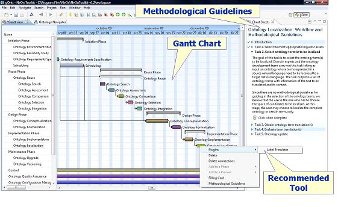

")
")
gOntt
gOntt is a tool for scheduling and executing development projects that has the following main features:
- It uses templates oriented to schedule ontology developments. These developments are based on the scenarios proposed by the NeOn Methodology.
- It generates the scheduling of ontology developments in the form of Gantt charts.
- It informs ontology developers about how to carry out a process or an activity using prescriptive methodological guidelines. It also informs about the specific NeOn Toolkit plug-ins to be used.

gOntt functionalities for scheduling ontology projects.
gOntt provides support to ontology developers so that they can (a) decide which ontology life cycle model is the most appropriate for building their ontologies (waterfall or iterative-incremental), which processes and activities should be carried out and in which order (e.g., specifying ontology requirements before re-engineering a knowledge resource into an ontology), and (b) create a graphical representation in the form of a Gantt chart with the processes and activities needed, including time restrictions between them.
Schedules for ontology development projects can be created either from scratch (including processes, activities, phases, as well as restrictions among them) or in a guided way.
In the guided way, gOntt creates a preliminary plan for the ontology development by means of
- Templates that automatically generate the initial schedule for ontology development projects. These templates were built taking into account the NeOn Methodology. These templates show a default plan based on the different possible combinations between life cycle models and processes and activities.
- A simple two-step wizard that contains intuitive questions implicitly allowing the ontology developer to select the ontology life cycle model and the processes and activities needed in his development. To answer such questions the ontology developer takes into account the ontology requirements and the type of candidate knowledge resources to be reused.
gOntt main output is the initial plan for building the ontology in the form of a Gantt chart that the developer can modify later on (a) by including, modifying, or deleting processes, activities and phases, (b) by changing order and dependencies among processes and activities, and (c) by including resource assignments and restrictions to the plan. This functionality to generate default preliminary plans provides a great advantage over the tools that schedule projects.
gOntt functionalities for helping in their executions
gOntt provides prescriptive methodological guidelines by means of (1) a filling card that includes the process or activity definition, its goal, inputs and outputs, performer of the action, and the time, and (2) a workflow that describes how the process or the activity should be performed with its inputs, outputs, tasks and actors involved.
In addition, gOntt provides a direct and automatic access to NeOn Toolkit plug-ins associated to each process and activity. Besides, gOntt displays a quick-start guide for using the plug-in launched.
How to use gOntt
To use gOntt, you should first install the NeOn Toolkit (http://neon-toolkit.org/wiki/Download) and then to install the gOntt plug-in.
Here (http://www.neon-project.org/nw/Movie:_gOntt) you can find a video that shows how to use gOntt.

Created under Creative Commons License - 2015 OEG.